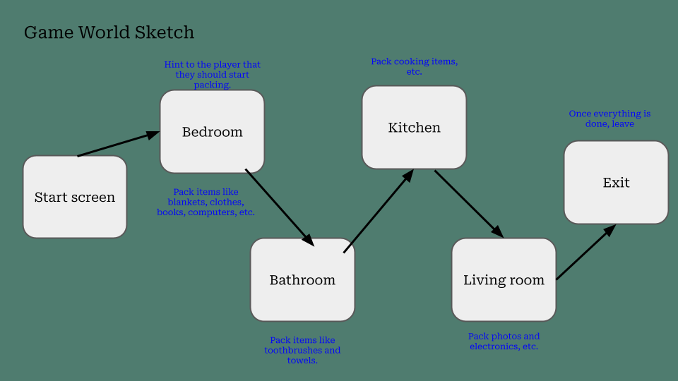
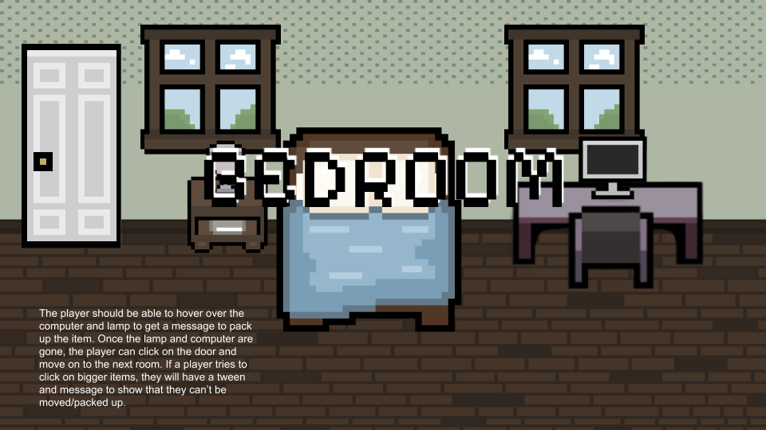
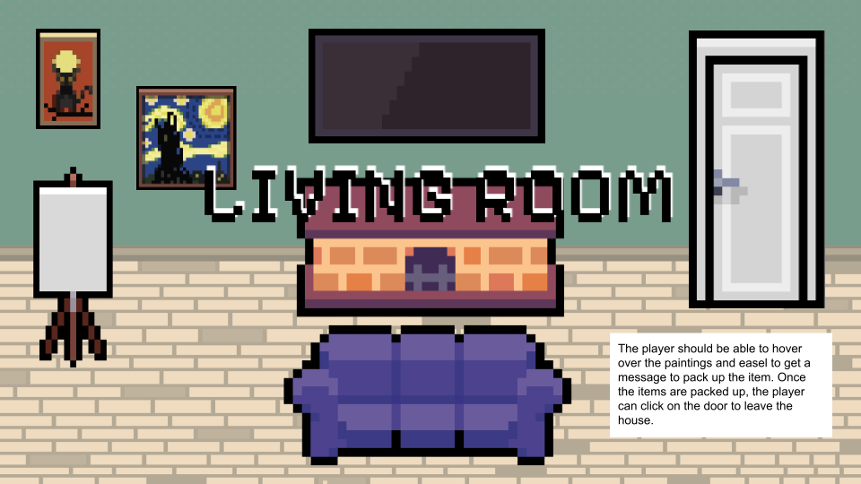

Packing
A short game about how small actions are part of a larger journey.
- Genre
- Interactive Fiction
- Tools
- Phaser
- Team
- Solo project
- Role
- Programmer, Artist
overview
Packing is a cozy, point-and-click adventure game inspired by Unpacking. Players explore familiar rooms, interact with everyday objects, and pack belongings before moving on to the next room. What starts as a simple task becomes a small journey through the spaces and objects that make a place feel like home.
Built using Adam Smith's Adventure Prototype, I expanded the original framework with object pickup interactions, hover effects, animated feedback, and room-to-room transitions. The goal was to create a relaxing experience that turns an ordinary activity into an interactive adventure.gameplay video
design process
1. Prototype/Initial Ideas
I wanted to create a simple, cozy game centered around the experience of packing up and moving. Inspired by games like Unpacking, I focused on everyday objects and familiar living spaces rather than traditional adventure mechanics.
I initially mapped out the different rooms the player would explore, including the bedroom, bathroom, kitchen, and living room. Each room would contain a combination of packable belongings and larger objects that could not be moved. This gave players a simple goal in each space while allowing the game to feel like a continuous journey.
Before implementing the game in Phaser, I created a Google Slides prototype to plan out the player experience and interactions. I chose a first-person room perspective, allowing players to view each space directly.

I chose a pixel-art aesthetic and a muted, earthy color palette to create a arm and comfortable atmosphere. The prototype also helped me plan interactive elements, such as hovering over objects to display messages, clicking to pack belongings, and unlocking the next room once the required items were collected.

what i did
- Designed the game concept, room layouts, and interactive gameplay prototype.
- Developed the game using Phaser and JavaScript, building on the provided AdventureScene framework.
- Drew several game assets (bed, windows, dresser).
- Implemented object pickup mechanics.
- Created hover interactions and tween animations to provide visual feedback.
what i learned
- Learned how to structure a game using scenes and reusable systems.
- Gained experience with inheritance by extending the provided AdventureScene framework to support new gameplay mechanics.
- Improved my understanding of game state management by using an inventory system to track items across different scenes.
- Used Phaser tweens to create animations and visual feedback for object interactions.